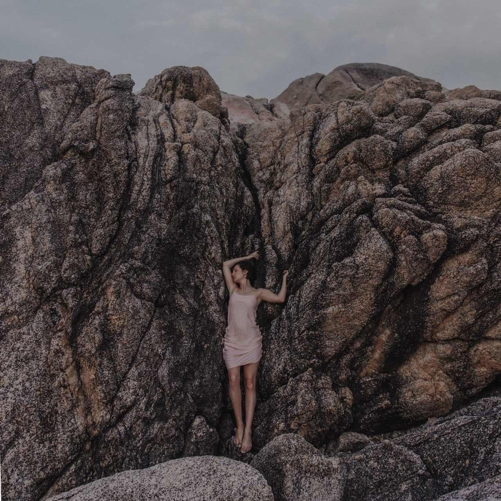
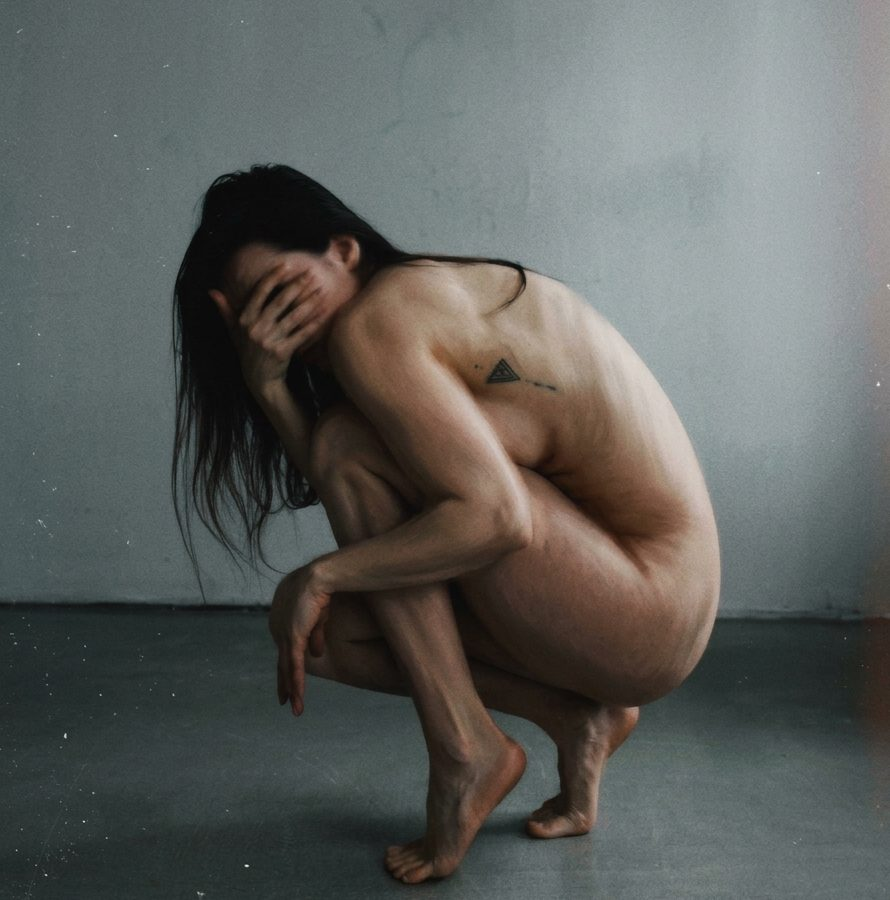

3х-дневный интенсив: связь психики, эмоций и тела
И это далеко не только физические болезни. Психика подает тревожные сигналы через конкретные жизненные состояния, которые вы можете обнаружить у себя:
Постоянная фоновая тревога
Хроническое напряжение в теле
Сложности в отношениях
Чувство «живу не свою жизнь»
Чувство вины и низкая самооценка
Невозможность сделать важный шаг
Всё это — разные формы одной системы адаптации.
И на этом интенсиве мы будем учиться деликатно понимать этот язык, вместо того чтобы бесконечно бороться с собственным телом и симптомами.

В этом интенсиве я объединила всё, что сегодня составляет основу моей практики:
Каждый день состоит из двух частей
Мы будем говорить о:
Без сложной терминологии — понятно, последовательно и с большим количеством примеров из практики.
После каждой теоретической части мы сразу будем переходить к проживанию материала. Вас ждут:
Для меня важно, чтобы знания не оставались только на уровне понимания. Поэтому каждая практика становится естественным продолжением теории и помогает постепенно переносить полученный опыт в повседневную жизнь.
Нажмите на интересующий день для ознакомления
В этот день мы разберёмся, как формируется наша психика и почему каждый человек по-разному реагирует на одни и те же события.
К концу дня вы начнёте видеть не только свои реакции, но и понимать, откуда они берутся.
Он подойдёт вам, если вы:
Было: Восприятие тела исключительно как источника симптомов, боли, тревоги и вечного фонового напряжения.
Станет: Умение распознавать язык ощущений и сигналы нервной системы раньше, чем они перерастут в симптомы.
Было: Привычка бесконечно «жать на газ», истощая внутренний ресурс и не умея расслабиться в конце дня.
Станет: Возвращение в безопасный контакт с реальностью через конкретные дыхательные и телесные психотехники.
Было: Постоянное подавление эмоций, борьба с телесными зажимами и поиск одной "волшебной таблетки".
Станет: Глубокое понимание связи психики и тела, а также обретение сильного союзника, который всегда на вашей стороне.
Формат участия
Мне важно сохранить небольшое количество участников.
Так у нас появляется возможность не только пройти программу, но и уделить внимание каждому человеку.
Если у вас есть симптом, состояние или вопрос, который давно беспокоит, мы сможем рассмотреть его через призму психофизиологии, стрессовых реакций и связи психики с телом, а также увидеть закономерности, которые могут стоять за происходящим.

Попробуйте переключить режимы дыхания, чтобы настроить вегетативную нервную систему прямо сейчас.
Мягкая балансировка симпатической и парасимпатической систем.
Ритм: 4с вдох — 4с пауза — 4с выдох
Время и место
7–9 августа
19:00–23:00
Москва, м. Чистые пруды
Стоимость — 16 000 ₽
Опыт и переживания тех, кто соприкоснулся с практикой
Я очень сильно тебе благодарна за те инструменты, которые ты даёшь, и за то, как нежно и бережно ты всё это предлагаешь. Мне грустно от осознания, сколько внутренней работы предстоит — это непросто, но жить по-старому уже невозможно. Как орёл когтями вцепляюсь в те опоры, которые ты давала за всё время нашего взаимодействия: что «втопить в газ» — это прямая дорога к неврозу, и что иногда нужно просто бережно принять то, что сейчас происходит. Внутренний шторм в самом разгаре, но я просто глубоко дышу и перестраиваюсь.
Алина, я не знаю даже, кого благодарить за то, что ты однажды появилась в моей жизни! Потому что тот объём и глубина, которые я ощутила в работе с тобой, — это вообще совершенно новый уровень, ранее мне недоступный. На интенсиве меня порой просто сносило от количества осознаний про себя и свой род! И мне так запала фраза о том, что мы все — уникальные узоры. Я её реально забираю с собой. «Я — узор!» — как это круто звучит и действительно меняет отношение к себе. Для меня это было не только про body, а про глубокие, многослойные внутренние процессы. И ты умеешь проводить в них потрясающе бережно. Спасибо!
Спасибо огромное за такой чудесный интенсив! Эти три дня были для меня особенными, невероятно теплыми и значимыми. Я несказанно рада, что, можно сказать, случайно здесь очутилась — узнала об интенсиве какой-то волшебной волей судьбы. Это именно то, что было мне жизненно необходимо прямо сейчас. Теперь я хочу находиться в этом состоянии регулярно.
Мне очень понравилось, что программа была выстроена невероятно логично. Смена теории, групповой работы, соло-практик и дыхания — это то, что действительно помогло мне выстроить в голове четкую, работающую систему. Пазл наконец-то сложился.
Мне было невероятно тепло, безопасно и спокойно в созданном пространстве — и со всеми участниками, и лично с тобой. Понравились глубокие практики и обилие живых примеров, которые подсветили мои истинные внутренние ценности. Местами я уходила в интенсивные переживания, но теперь я забирала в жизнь бесценный инструмент — позицию бережного наблюдателя за своим телом. Спасибо за эти три дня!
Я бесконечно благодарна тебе и группе за эти три дня. Как всегда случается, интенсив прошёл не так, как я ожидала. Почему-то думала, что буду прорабатывать что-то другое, что всплывёт недавнее волнующее. И ожидала мощного взрыва внутри. Но всё вышло не так. Каждый день бережно добавлял новые слова, образы и структуры. Я получила реальную возможность замечать то, что годами оставалось вне прожектора моего внимания, но всё это время происходило в моём теле.
Всё, что важно знать перед началом нашего пути
Абсолютно нет. Интенсив построен на мягких соматических практиках, микродвижениях, техниках саморегуляции и дыхании. Мы не занимаемся спортом или сложной йогой — все упражнения бережные, выполняются в вашем комфортном темпе и подходят людям с любым уровнем подготовки и состоянием здоровья.
Всё необходимое оборудование, коврики и пледы мы предоставляем на месте. От вас понадобится только максимально свободная, удобная одежда (которая не сдавливает грудную клетку и живот, желательно спортивная или повседневная мягкая одежда) и блокнот с ручкой для личных терапевтических записей.
Камерный формат до 12–15 человек позволяет мне тщательно отслеживать динамику группы. Мы принимаем строгое правило конфиденциальности: всё, что проживается и озвучивается на интенсиве, остаётся строго внутри этого пространства. Никто не принуждает вас делиться историями вслух — вы можете работать в своем собственном темпе.
Да, вся теоретическая часть будет записана, и вы получите к ней доступ после завершения интенсива, чтобы в любое время освежить знания. Практическая групповая работа не записывается на видео из соображений полной безопасности и приватности участников.
«Любые изменения начинаются с признания.
Не с капитуляции, а с честной встречи с тем, что есть»